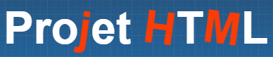

Design
Pour notre projet html nous avons choisi de faire un site qui s'autodécrit et qui présente la matière ainsi que notre projet python.
Animations
- On a un logo animé désiné avec du CSS.
- Des lettres du titre de la page peuvent se retourner et se colorer quand on garde la souris sur le titre. 
Ergonomique & Responsive
- Menu dépliable avec bouton 'sandwich' animé.
- Adapté à tout supports